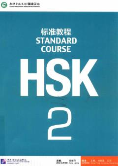

HSXitoy tilini o'rganish va HSK 2 imtihoniga tayyorgarlik ko'rish uchun mo'ljallangan darslik.
Ushbu kitob xitoy tilini o'rganuvchilar uchun mo'ljallangan bo'lib, HSK 2-darajali imtihoniga tayyorgarlik ko'rish uchun rasmiy qo'llanma hisoblanadi. Unda muloqot qilish ko'nikmalarini oshirishga qaratilgan matnlar, mashqlar va test materiallari jamlangan. Kitob Xitoy tili test markazi va Peking til va madaniyat universiteti hamkorligida yaratilgan.